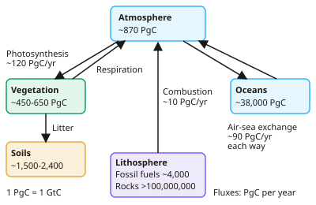

A-level Geography Year 13 · Topic 14
The carbon cycle and energy security
The carbon cycle and energy security explores how carbon moves through the Earth system, and how countries secure their energy.
We will study the carbon cycle, human disturbance, links with the water cycle and climate, and ways to manage carbon.
Then we examine global energy supply and demand, energy security, unconventional fossil fuels, and the transition to renewables and nuclear.
- 8 subtopics
- 355 questions
- Free: 14.1 notes and 10 questions
In this topic
- 14.1The carbon cycle: stores, flows, fluxes and the global carbon budgetFree below · 36 questions
- 14.2Human disturbance of the carbon cycle: fossil fuels, land-use change, ocean acidificationOpen in Full Marks · 75 questions
- 14.3Carbon cycle, climate and water links: feedbacks, permafrost, methane and tipping pointsOpen in Full Marks · 76 questions
- 14.4Managing the carbon cycle: sequestration, carbon capture, forest management and REDD+Open in Full Marks · 32 questions
- 14.5Global energy supply and demand: energy mix, consumption patterns and playersOpen in Full Marks · 34 questions
- 14.6Energy security and geopolitics: pathways, risks and national strategiesOpen in Full Marks · 35 questions
- 14.7Unconventional fossil fuels: tar sands, shale gas and deepwater oilOpen in Full Marks · 29 questions
- 14.8Renewables, nuclear and energy transition: sustainable energy futuresOpen in Full Marks · 38 questions
14.1 · Free notes
The carbon cycle: stores, flows, fluxes and the global carbon budget

Key points
- The carbon cycle is a closed system in which carbon moves between stores (reservoirs, measured in PgC, where 1 PgC = 1 GtC = 10¹⁵ g) and flows/fluxes (transfers, measured in PgC per year).
- The largest store is the lithosphere: sedimentary rocks (limestone) hold over 100,000,000 PgC, and fossil fuels hold about 4,000 PgC. The oceans hold about 38,000 PgC, soils about 1,500–2,400 PgC, the atmosphere about 870 PgC and terrestrial vegetation about 450–650 PgC.
- The fast (biological) carbon cycle operates over days to centuries through photosynthesis, respiration, decomposition and ocean–air exchange. The slow (geological) carbon cycle operates over millions of years through weathering, sedimentation, lithification, subduction and volcanic outgassing.
- Photosynthesis (6CO₂ + 6H₂O → C₆H₁₂O₆ + 6O₂) moves carbon from the atmosphere to the biosphere at about 120 PgC/yr on land. Respiration, decomposition and combustion return it to the atmosphere, and ocean–air exchange is about 90 PgC/yr in each direction.
- Net flux = inputs − outputs: a store is a net sink if inputs exceed outputs and a net source if outputs exceed inputs. Residence time = store ÷ output flux, for example 600 PgC ÷ 120 PgC/yr = 5 years.
- The solubility (physical) pump works because CO₂ dissolves more readily in cold, high-latitude water, which sinks with thermohaline circulation. The biological pump works because phytoplankton fix CO₂ and dead organic matter sinks as 'marine snow'. Marine organisms also build CaCO₃ shells (the carbonate pump), and these form sediments.
- The global carbon budget balances sources (fossil fuels about 9.5–10 PgC/yr plus land-use change about 1 PgC/yr) against sinks. Roughly 45% of emissions stay in the atmosphere, about 25% go to the ocean and about 30% to land (vegetation and soils).
- Atmospheric CO₂ was about 280 ppm before industrialisation and is now above 420 ppm. The Keeling Curve (Mauna Loa) shows a long-term rise plus an annual zigzag, because Northern Hemisphere photosynthesis draws CO₂ down in summer.
- Useful conversions: 1 ppm CO₂ ≈ 2.1 PgC, and 1 PgC = 3.67 Pg CO₂ (44 ÷ 12). Be ready to use these in calculations.
- The carbon cycle regulates climate through the greenhouse effect and supports life because carbon is the basis of organic molecules. It is linked to the water cycle through photosynthesis, evapotranspiration and the ocean's ability to dissolve CO₂.
- Exam tip: when describing the budget, give figures with units, say whether a flux is natural or human, and note that sinks (ocean and land) currently slow the rise in atmospheric CO₂ but may weaken.
In more detail
- Global emissions: humans emit about 40 billion tonnes of CO₂ a year, about 37 billion from fossil fuels and industry and about 4 billion from land use change.
- Carbon budget: to keep warming to 1.5 °C, the remaining budget is only a few years of current emissions.
- Biological pump: phytoplankton take up CO₂ and some sinks to the deep ocean when they die.
- Soil carbon: soils hold more carbon than the atmosphere and all vegetation combined.
- Fast and slow cycles: the fast cycle works over years to centuries; the slow cycle, through rocks, over millions of years.
Practice
The carbon cycle: stores, flows, fluxes and the global carbon budget: 10 questions
Pick an answer to check it, or open the answer for the explanation.
1. Which is the largest carbon store on Earth?
- Oceans
- Sedimentary rocks of the lithosphere
- Soils
- Fossil fuel reserves
Show answer
B: Sedimentary rocks of the lithosphere. Sedimentary rocks such as limestone hold over 100 million PgC, far more than the oceans (~38,000 PgC), soils or fossil fuel reserves (~4,000 PgC).
2. Atmospheric CO₂ rose from 280 ppm to 420 ppm. If 1 ppm ≈ 2.1 PgC, by roughly how much did the atmospheric carbon store increase?
- 294 PgC
- 140 PgC
- 882 PgC
- 588 PgC
Show answer
A: 294 PgC. The rise is 140 ppm × 2.1 PgC per ppm ≈ 294 PgC.
3. Human sources are 9.5 PgC/yr (fossil fuels) + 1.0 PgC/yr (land use). The atmosphere gains 5.0 and the ocean takes up 2.8. What is the land sink?
- 2.7 PgC/yr
- 3.7 PgC/yr
- 8.3 PgC/yr
- 5.3 PgC/yr
Show answer
A: 2.7 PgC/yr. Sources 10.5 − atmosphere 5.0 − ocean 2.8 = 2.7 PgC/yr absorbed by the land sink (vegetation and soils).
4. What is the main role of the biological pump in the oceans?
- Warm water releasing CO₂ at the equator
- Weathering of rocks supplying calcium to the sea
- Upwelling converting CO₂ into methane
- Phytoplankton fix CO₂ and carbon sinks as dead organic matter
Show answer
D: Phytoplankton fix CO₂ and carbon sinks as dead organic matter. Phytoplankton photosynthesise, and dead material sinks as marine snow, transferring carbon from surface waters to the deep ocean.
5. Which surface seawater absorbs CO₂ most readily?
- Warm, tropical water
- Water at the equator during upwelling
- Cold, high-latitude water
- Warm, very saline water
Show answer
C: Cold, high-latitude water. Gas solubility increases as temperature falls, so cold polar water takes up more CO₂. This dense water then sinks in the solubility pump.
6. Which pair correctly matches a carbon cycle process with its timescale?
- Respiration – days to years
- Lithification of sediments – days
- Fossil fuel formation – decades
- Photosynthesis – millions of years
Show answer
A: Respiration – days to years. Respiration is part of the fast carbon cycle. Lithification and fossil fuel formation take millions of years, while photosynthesis is rapid.
7. The Keeling Curve shows CO₂ falling each Northern Hemisphere summer. What is the best explanation?
- Volcanoes are less active in summer
- Reduced fossil fuel burning in summer
- Oceans warm and absorb more CO₂
- Increased photosynthesis by Northern Hemisphere vegetation
Show answer
D: Increased photosynthesis by Northern Hemisphere vegetation. Most land vegetation is in the Northern Hemisphere, so summer photosynthesis draws down CO₂, giving the annual zigzag on the rising trend.
8. Global terrestrial photosynthesis takes up 120 PgC/yr and respiration plus decay return 118 PgC/yr. What is the net flux?
- Net source of 2 PgC/yr
- Zero: it is in equilibrium
- Net sink of 2 PgC/yr
- Net sink of 238 PgC/yr
Show answer
C: Net sink of 2 PgC/yr. Inputs (120) exceed outputs (118), so the vegetation and soil store grows: a net sink of 2 PgC/yr.
9. Which statement about the global carbon budget is correct?
- Land and oceans together absorb just over half of human CO₂ emissions
- All human CO₂ emissions remain in the atmosphere
- Oceans absorb most emissions, land absorbs almost none
- Land-use change is a larger source than fossil fuels
Show answer
A: Land and oceans together absorb just over half of human CO₂ emissions. About 45% of emissions stay in the atmosphere; the rest is taken up by the ocean (~25%) and land (~30%) sinks. Fossil fuels are the larger source.
10. A store contains 600 PgC and the flux out of it is 120 PgC/yr. What is the average residence time of carbon?
- 0.2 years
- 72,000 years
- 5 years
- 20 years
Show answer
C: 5 years. Residence time = store ÷ output flux = 600 ÷ 120 = 5 years.
Keep going in Full Marks
Full Marks has 36 questions on The carbon cycle: stores, flows, fluxes and the global carbon budget (26 more than here), set out in practice levels. You also get notes and 3D models for all 8 subtopics of The carbon cycle and energy security, plus games, timed exams and past papers.
On your exam board
- AQATopic 6: Resource security
- EdexcelTopic 6: The carbon cycle and energy security
- CambridgeTopic 12: Environmental management
Not in the OCR A specification.